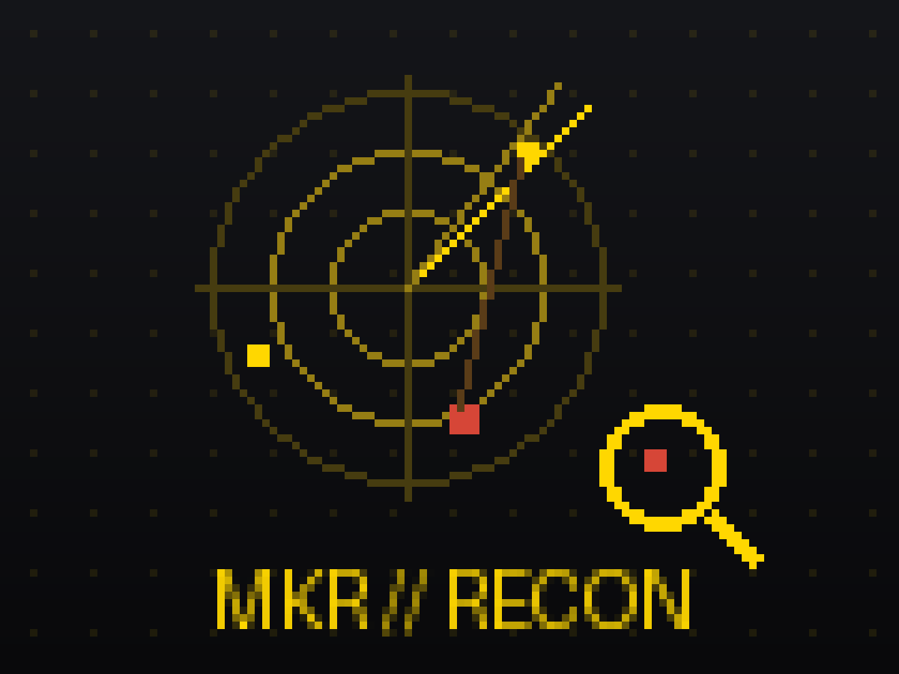
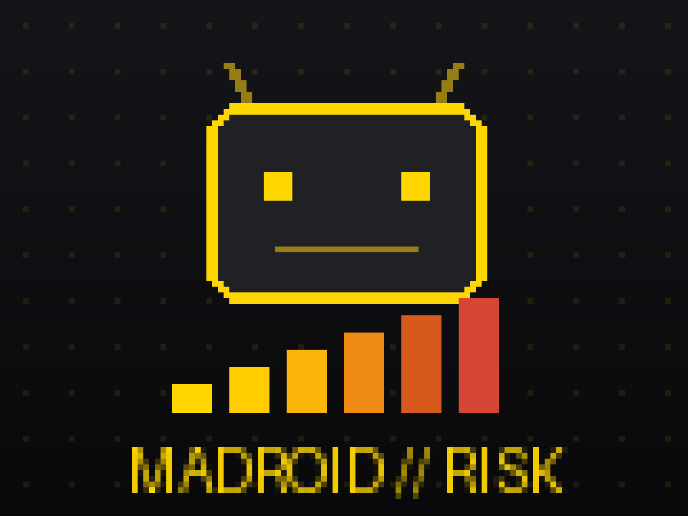

About Me
The name is Adarsh, a cybersec genesis (which I consider myself :) who's into the world of ethical hacking, digital forensics, and understanding how systems tick — and how to break and secure them. From exploring vulnerabilities in web applications to analyzing malware behavior, I love to uncover the details others might miss.
Over the past few years I've gained hands-on experience through internships and personal projects, diving into penetration testing, threat hunting, and even drone forensics (a surprise to me too — a drone, of all things). I enjoy combining technical curiosity with real-world problem-solving, actively looking for smarter, more secure ways to approach challenges.
Currently exploring the endless possibilities of AI and cybersecurity, I'm constantly trying out new tools, learning about emerging threats, and sometimes building tools of my own {trying :( }. I believe cybersecurity isn't just about defense — it's about creativity, adaptability, and staying one step ahead. Looking for possibilities in AI, breaking (and fixing) code, and occasionally reminding myself that rushing isn't always the answer — in both programming and cybersecurity.
Education
Digital University Kerala
M.Sc., Cybersecurity
2025 - Aug 2027 (expected)
Yenepoya Institute of Arts, Science & Commerce, Mangalore
B.Sc., Cyber Forensics, Data Analytics & Cybersecurity
Graduated Oct 2024
Mar Gregorious Memorial School, Trivandrum, Kerala
Higher Secondary, Biology Science
2020 - 2022
Experience
Cybersecurity Intern
Kerala Police Cyber Operations
Jan 2025 - Mar 2025
Operated Wazuh SIEM across active law enforcement infrastructure, tuning detection rules and triaging live alerts while supporting active cybercrime investigations.
- Reduced mean incident response time by 30% through detection rule tuning and alert triage.
- Performed malware analysis and device forensics on 15+ active cybercrime cases, producing evidence reports used in case resolution.
- Applied legal evidence standards and chain-of-custody requirements while working alongside law enforcement on live investigations.
Digital Forensics Intern
Cyber Police Station, Thiruvananthapuram
May 2024 - Jun 2024
Performed disk and memory forensics on live cases using Autopsy and Volatility, preserving evidence to prosecution standards.
- Analyzed 20+ cases and recovered deleted artifacts for investigative use.
- Authored structured forensic reports documenting findings, tool methodology, and evidence integrity for law enforcement proceedings.
Projects

MKR - Modular Knowledge Recon
Built a defensive asset validation framework for bug bounty recon and internal assessments: subdomain enumeration (CT logs + DNS), Nmap service discovery, validation of exposed FTP/MySQL/PostgreSQL services, and probes for sensitive paths such as /.env and /.git/.
Detects dangling-CNAME takeover risk via SaaS fingerprints and correlates findings into prioritized exposure chains with business-impact statements.

MaDroid - Android Malware Risk Prediction
Engineered a 32-feature runtime behavior model from raw Tracee eBPF syscall traces across 50,000+ Android apps, predicting a continuous 0-58 malware risk score instead of a binary label.
Benchmarked 7 regression algorithms and tuned the top performer with Optuna Bayesian search and stacking ensembles; a hand-crafted interaction feature outranked all 25 base features.
Lifted AUC-ROC to 0.8229 (0.955 on critical-threat apps) after identifying a ground-truth relabeling strategy - label quality mattered more than algorithmic tuning.

SIEM Security Platform
Developed and implemented a security monitoring solution using Wazuh and ELK Stack
Containerized the application using Docker for easy deployment
Created an intuitive dashboard for real-time threat monitoring and log analysis

Website Security Extension (Chrome)
Integrated Google Safe Browsing API to develop a real-time website safety analyzer
Enhanced web browsing security through proactive threat detection
Practiced secure coding principles and API integration

Credential Leak Detection System
Built a credential leak detection system using Python and Hugging Face Transformers
Implemented pattern recognition for sensitive data identification
Demonstrated practical application of AI in cybersecurity
Skills
 C
C Burpsuite
Burpsuite Wireshark
Wireshark Kali Linux
Kali Linux Bash
Bash Python
Python Wazuh
Wazuh OSINT
OSINT JavaScript
JavaScript HTML
HTML CSS
CSS React
React Node.js
Node.js MongoDB
MongoDB
Certifications
Certified Penetration Tester (CPT) - Red Team Hacker Academy (2024)
Advanced web application and network penetration testing, vulnerability management, wireless security, Docker security, thick-client pen testing, and cloud security.
IBM Cybersecurity Analyst Professional Certificate - Coursera (2024)
Hands-on expertise in tools like SIEM, endpoint protection, incident response, and penetration testing.
Additional Coursera certificates in cybersecurity, AI, and programming.
Contact
Feel free to reach out to me via email or connect with me on social media. Just ping me for new opportunities and projects.
Email: adarshanil.963@gmail.com